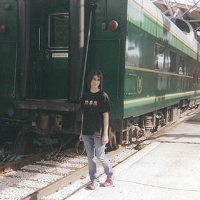

As I Am
Transitioning in Tulsa

Sarah Szabo
Melissa Lukenbaugh
“They’re gonna like you in there.”
Handcuffed and helpless, you stand still, and stay silent. There’s no need to ask what the officer means, and he doesn’t feel the need to explain. This is a familiar line from movies. This is something that sounds like it makes sense.
Here’s what it feels like: tunnel vision. Time loses meaning. An earthquake in your chest and, just beneath it, your frozen heart. The skin goes cold, but your mind goes hot with alarm. The teeth grit, the jaw sets. This is a fear response—fear, and a sense of resignation.
The officer asks you, “Is that your real hair?” You keep your mouth shut. Thankfully, he doesn’t try to find out. Of course it’s your real hair, long and slightly tangled at the night’s end, sprouting straight out from your scalp, the hair you’ve had since the day you were born.
At the police station, two medical technicians take blood from your arm. Later you will see the paperwork where they crossed out their initial guess of “F” on the box beside “Gender” and specified that you are, in fact, a man.
They don’t treat you like a man, though. They treat you like a liar. You said you were a woman, and you lied.
Why would you do this, they wonder. Why on earth would you choose to do this?
That’s a good question, but the wrong approach. Viewed another way, the answer is pretty simple—it was never a choice at all.
I was born in Tulsa at Hillcrest Medical Center on July 16, 1990. But if you were to go looking, you would find no record of the birth of Sarah Szabo. There was no Sarah Szabo then—just a young, transgender baby, born a boy to loving parents.
Transgender people are often met with the question of self-awareness—“when did you know?” And the answer tends to be, “I always knew.” It’s not that I knew that I was transgender, not necessarily. But I knew and could feel, from my earliest memories, that something was wrong. I grew from a young boy to a young man, all the while trying to learn the sorts of things that boys, men, are supposed to do, the kind of people they’re supposed to be. I learned from my mistakes. .jpg) During a second grade discussion on fashion in history, I mentioned to the class that I’d always wanted to wear a tunic—you know, like Link, the Hero of Time from the Legend of Zelda. He’s a boy. He wears a tunic. And the class laughed at me. The realization stung acutely. Maybe boys don’t dress like that, so why did I want to?
During a second grade discussion on fashion in history, I mentioned to the class that I’d always wanted to wear a tunic—you know, like Link, the Hero of Time from the Legend of Zelda. He’s a boy. He wears a tunic. And the class laughed at me. The realization stung acutely. Maybe boys don’t dress like that, so why did I want to?
I moved through adolescence feeling very out-of-step. My long hair, tight jeans, pink shoes. My fashion sense in old pictures is hopeless, stuck between worlds, fueled by a lack of commitment.
I wanted it to go away, but by the time I reached high school, the truth grew clearer and clearer. By the time I got to college, the choice was undeniable—live as I really am, or die right now. I chose to live.
It was the last week of December 2008 when I decided, terrified, to announce to my family that I was about to commit to the boldest New Year’s resolution. I told them one by one over the course of a daylong emotional ultramarathon. By the time the sun went down, I was out of tears to cry. I remember the tension in the laundry room, where I cornered my mother while she folded towels, wringing my hands, saying, “I have to tell you something,” and taking thirty seconds to speak again. Mom was so scared. “Please,” she said, “Spit it out.” So I did.
I remember the way my little brother crumpled in the hall, unable to comprehend it all at once. The way my dad laughed as he heard the news, a gregarious guffaw, reveling in the novelty of the world, as far from mean-spirited as could be. My sister, 9 years old, had only one question, the first words out of her mouth: “So, I’m going to have a big sister?” Then she smiled the kind of smile that makes you feel like your heart is going to explode.
The family followed her lead. They circled the wagons, drawing lines in the sand against extended family that was sometimes less than kind. My grandpa’s first instinct was to protect me—“We don’t need to tell anyone this.” That was the most startling; the family patriarch had a vision of his whole family versus me—and he chose me.
I am still repaying my debts to my family, who all deserve the world and more. But at the same time I am alone, trawling America, trying to figure out the world while avoiding the stares from people who are apprehensively trying to figure out me. “What is that?” they wonder. “Is that a man or a woman? Ma’am? Sir?”
The scrutiny can take a lot of shapes, and change rapidly—confusion to amusement, antagonism, rudeness, wrath. How do I make the people in charge—the normal people—feel more comfortable with me? This is an ugly feeling, one that leaves me constantly experiencing the world with one eye turned slightly inward, perpetually lazy to the beauty of life, always busy battling fear.
The fear is all encompassing, and not unfounded. Assault, rape, vicious murder. The National Coalition of Anti-Violence Programs has on record 18 homicides in 2013, 20 homicides in 2014, and according to the Human Rights Campaign, 21 last year, at least. Trans people are killed angrily; they’re often torn to pieces. Like Yaz’min Shancez, whose body was found smoldering, in pieces, set on fire, next to the trash.
Honestly, you can’t remember which one of your captors implied to your face that you would be raped in the Osage County Jail. Even at the moment when he says it, you don’t really hear him—but for your captive body, you are somewhere far away, utterly dissociated. It’s the only way that you can bear the treatment, or the stares. You notice the uncomprehending silence from other inmates before you’re processed and locked into solitary confinement. On the door they write, “KEEP ISOLATED.” As your numbness begins to dissipate, you think to yourself with the darkest gallows humor that it’s kind of funny the only place here where you’re apparently safe from sexual assault is an isolation cell nicknamed “the hole.”
All this for the contents of a pipe. You knew the law—that part’s your fault. But you only thought you knew the punishment.
They forget to offer you a shower, but they do provide you with half-doses of your medication, the label of which they evidently didn’t correctly read. An officer whose face you cannot see walks by your cell and asks about the condition of “that thing in there,” and you know he’s talking about you.
When trans people are discussed in the media, a lot of time is spent talking about the dead. We see smiling faces of the deceased and hear about their tragic ends. This is meant to lend a state of urgency to things—people are dying, they’re being killed, they’re killing themselves. It’s meant to move you into action. But without understanding, you cannot act with substance.
Politicians often think trans people are perverts who upended their lives to switch bathrooms for a quick thrill. This has never been true. But the toxic things they said about gay people were never true either.
For the more than 700,000 transgender Americans, and the millions of trans people worldwide, we need for you to understand that being transgender is not done to get a reaction from you. We do not claim gender identities contrary to our biological sex flippantly, or as a lark, a joke, a provocation. It’s not a trick or subterfuge. It’s not a choice.
I was born with the brain of a girl that has now grown into the mind of a woman, all the while resting in a body that was born biologically male. I didn’t decide to adopt this lifestyle, no more than anyone’s cousin, sister, aunt, or son decided to be gay. Considering the treatment that gays have historically gotten and that trans people continue to get to this day, it doesn’t take an advanced mind to see that no rational person would choose a life like this, to be an object of mass hatred, disgust, a most quizzical thing.
In the years since birth I have managed, not without incredible help, to be recognized legally and medically as a woman. These hurdles, at least, I’ve cleared. In addition to the age at which I transitioned, the fact that my transition is complete puts me ahead of many trans people, who often suffer mightily at the hands of government as they fight for adequate healthcare and legal recognition.
They lack the support of their families, they lack the foundation that allows a person in America to find housing, get a job, make money. Many are homeless. They die without us hearing about them, because when they die, they’re often buried as their legal name and gender. They didn’t have the money to legally claim their names, and no one who tends to their body knows who they were. Dionne is buried as DeMarcus—she lives and dies misunderstood.
I need you to understand.
When gay people started coming out of the closet more frequently, they often came out in the company of a homophobe. A family member, a confidante, someone in his or her trusted circle was inclined first to think, “gross.” But a funny thing happened over the years—people don’t want to hate their family, their friends, their trusted confidantes. They love them for the quality of person they are, not the categories they fit into or deny. It’s why Dick Cheney was on record in support of gay rights before Obama. It’s why gay people can now not only marry, but live prosperously under the full and equal protection of the law. This was the will of the people because the people, in majority numbers, finally understood that there was nothing to fight against, no one to be afraid of, no real reason to deny equal lives to different people.
For the June 9, 2014 cover of TIME Magazine, the actress Laverne Cox posed, chin-out and head-on, looking resilient against the imagined eyes of skeptical readers. Beside her, a headline: “The Transgender Tipping Point.”
Until recently, popular films with trans characters were almost always tragedies. Like “Boys Don’t Cry,” for which the actress Hillary Swank won an Oscar for her role as Brandon Teena, a transgender man who was murdered. Even the 1995 film “Stonewall”—a very gay film—featured its only transgender character blowing her brains out after the weight of the world’s judgment became too much for her.
But we are slowly changing our collective mind as a society—indeed, we are reaching “the tipping point.” Caitlyn Jenner can be on the cover of Vanity Fair, Lana Wachowski can make millions of dollars directing Hollywood blockbusters, and films like last year’s “Tangerine” can be about two trans women, star two trans women, and win critical accolades. The culture has acknowledged we exist, but now we are finally being seen—not as villains, victims, or as punchlines, but as people.
Locked in a cell and being thought of not as a person, but a thing, takes you to the very edge of your ability to cope. If there were just one person who understood, you think, who could see you—maybe you could handle it. But nobody does—you are utterly alone. And it’s in that solitude, that sense of otherness and unacceptance, where one finds the ingredients for suicide.
Seeing people who look like you, in all their flaws and beauty—this big-shouldered woman, that small-statured man—does the opposite. And it’s important. Seeing your reflection in the culture gives you hope. You are, however marginally, accepted. That’s me up there.
Do you understand?
.jpg)
.jpg)